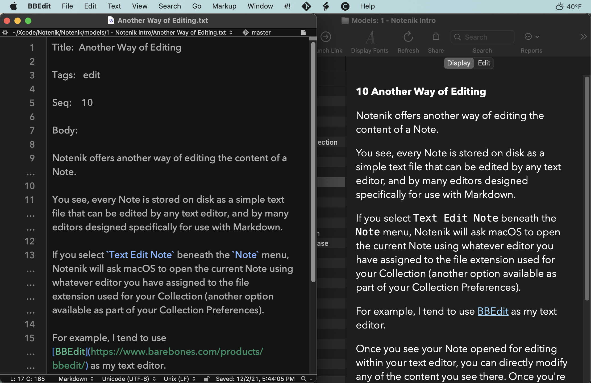

Notenik Intro
Back to Notenik.app
10 Another Way of Editing
Notenik offers another way of editing the content of a Note.
You see, every Note is stored on disk as a simple text file that can be edited by any text editor, as well as many editors designed specifically for use with Markdown.
If you select Text Edit Note beneath the Note menu, Notenik will ask macOS to open the current Note using whatever editor you have assigned to the file extension used for your Collection (another option available as part of your Collection Preferences).
For example, I tend to use BBEdit as my text editor.
Once you see your Note opened for editing within your text editor, you can directly modify any of the content you see there. Once you're done making your desired changes, save the file within your text editor, then return to Notenik, and use the Reload Note command beneath the Note menu to see your changes displayed within Notenik.
Next: Tags